我最近学习iOS测试的初步总结，刚开始学习测试，难免会认识肤浅，有很多错误，欢迎指正。
首先需要注意，测试驱动开发和行为驱动开发，重点还是在开发上，是一种开发方式而不是测试方式。
测试驱动开发TDD
TDD, 即Test Driven Development, 驱动测试开发，是先写测试，然后再写代码，如果代码都能够通过写好的测试，那就表示代码通过。TDD与我们平时的流程刚好相反，甚至可以说是一种比较极端的做法。
TDD主要使用XCode中的XCTest来完成。
举例说明：
在XCode中建立一个叫Calculator的新项目。项目建立之后，XCode其实已经为我们建立了test。如图所示：
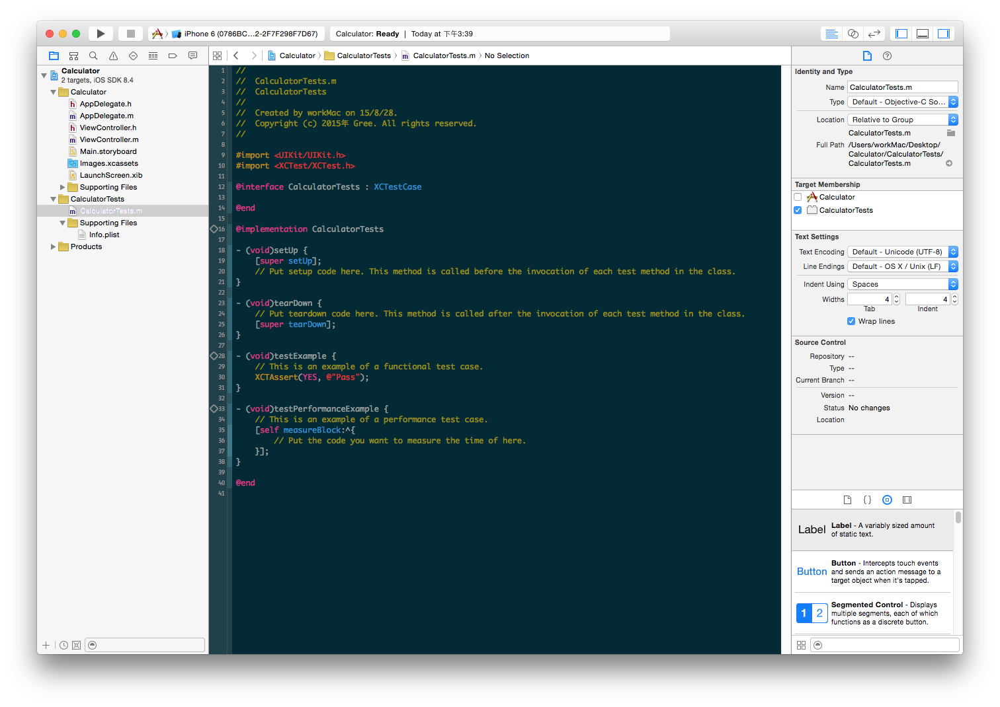
CalculatorTests.m文件中已经有四个方法：
|
|
XCTest在进行测试时将会寻找测试target中的所有XCTestCase子类，并运行其中以test开头的所有实例方法。在这里，默认实现的-testExample将被执行，而在这个方法里，Xcode默认写了一个XCTAssert的断言，令测试通过。所谓断言，就是判断输入的条件是否满足。如果不满足，则抛出错误并输出预先规定的字符串作为提示。另外，默认还有两个方法-setUp和-tearDown，这两个方法会分别在每个测试开始和结束的时候被调用。最后一个方法是用来测试性能的，暂时不做分析。
TDD的原则是先写测试，后写代码。我们先在这个测试文件里面加入两个测试方法：
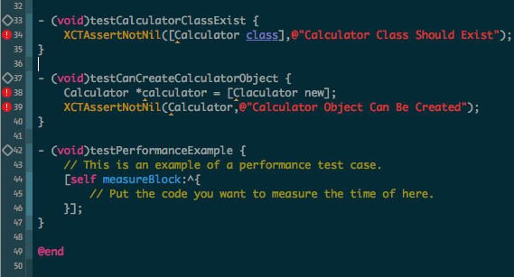
可以发现不但测试不能通过，连编译都存在问题，因为我们甚至连Calculator类都没有创建。实际上，在新建立Calculator文件并导入头文件到测试文件之后，这两个测试方法就都可以通过了，因为这两个方法只是用来测试Calculator类是否存在以及是否可以被初始化：
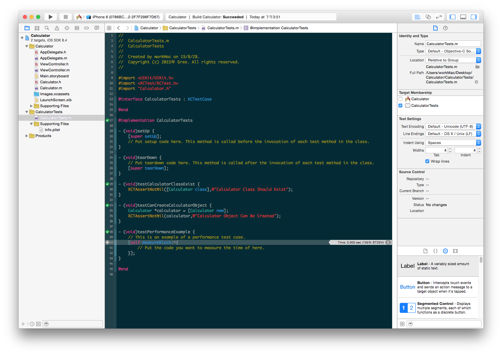
接下来我们测试Calculator类的基本功能。在测试文件中加入如下方法：
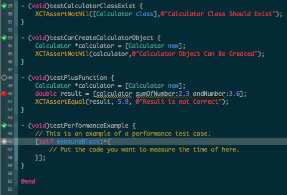
然后，在Calculator.h和Calculator.m两个文件中实现Calculator的加法运算功能：
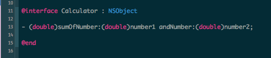
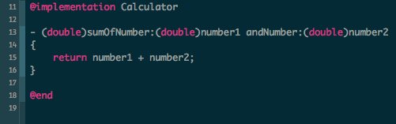
再运行测试（快捷方式⌘U），可以发现测试通过：
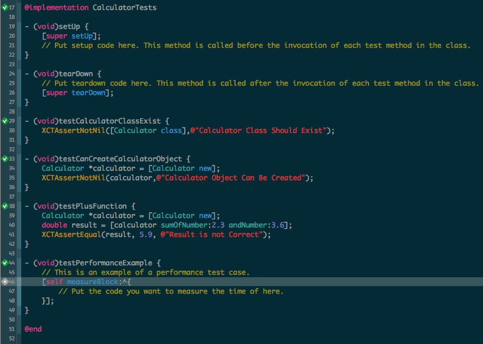
这里只是简单介绍一下TDD的基本思想和基本使用方法，很多东西未详细解释（各种断言的详细使用方法，性能测试的使用，可能在后续版本中添加）。
行为驱动开发BDD
TDD的不足
各个测试方法之间是割裂的。而且因为可能会存在很多个测试方法，很难寻找到某个特定功能的测试方法，测试文件的可读性很差
难以使用
stub和mock（下文详述，可简单理解为TDD难以处理代码之间依赖性很强时候的测试）
BDD
BDD解决了上述两个问题，将测试语句转换为类似自然语句的描述，方便理解和维护。也可以使用stub和mock来解决代码依赖性的问题。
BDD可以概括为三段式：Given-When-Then。非常接近自然语言的风格。
BDD框架有很多个，我们主要介绍和使用kiwi，kiwi实际使用如下图所示：
|
|
可以根据上文提到的Given-When-Then三段式理解为：
Given a team, when newly created, it should have a name, and should have 11 players
可见相比TDD更加接近自然语言的描述，大大增强了可读性和可维护性。
Kiwi的安装
Kiwi的安装请主要参考Kiwi在github上的项目wiki。总体上的思路是，先在电脑上安装CocoaPods，再使用CocoaPods来安装Kiwi。安装完成之后，建立Kiwi的测试文件，然后运行测试。整个流程比较复杂，而且一不小心弄错了的话，很容易测试失败。
另外，安装CocoaPods的时候，也有一些坑，新手可以参考这篇教程。安装好之后，再次打开项目需要使用.xcworkspace文件，而不是原来的项目文件。
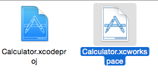
不使用CocoaPods，直接安装Kiwi也是可行的，但更加麻烦。要直接安装的，请自行参考Kiwi在github上的wiki。
Kiwi的使用
为测试Kiwi能否正常运行，我们写了一个简单的测试。运行结果如下图：
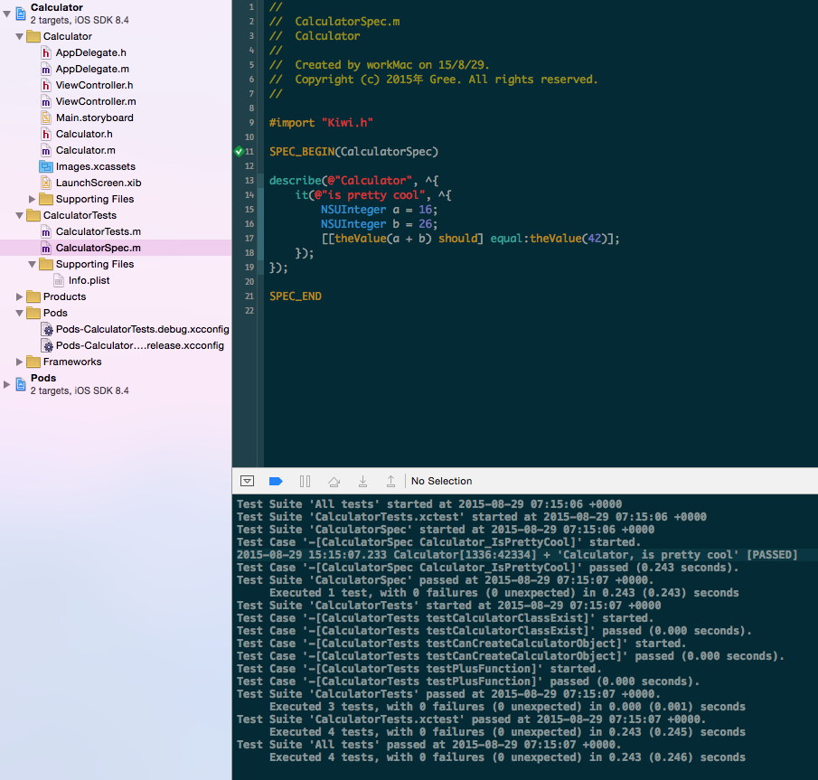
可见两个测试文件都进行了测试，下方的log区域中，先进行的Kiwi的BDD测试，然后运行的是我们之前写的TDD测试。
下面我们继续进行Calculator类的行为驱动开发。老规矩，还是先写测试代码：
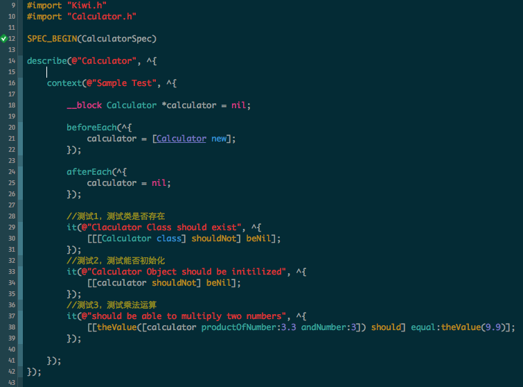
然后，到我们的Caldulator类中去实现乘法功能：
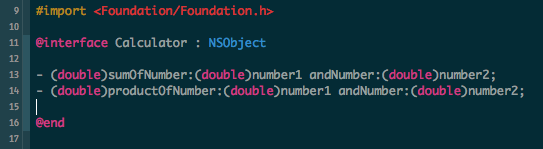
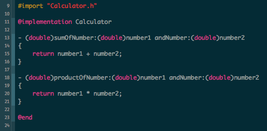
应该是没有问题，运行测试：
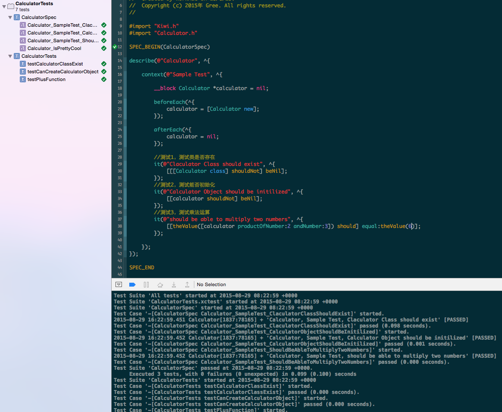
测试全部通过。以上我们说的，主要是BDD相对于TDD的第一个优势：可读性好和可维护性好。接下来的stub和mock部分，是关于BDD的第二个优势：代码之间依赖性很强的时候如何进行测试。
Stub
待补充，主要功能是模仿一个函数的功能，从而避免测试时对原来方法的依赖。
Mock
待补充，可以看做是stub的进阶版，能模仿一个类的功能，避免测试时对这个类的依赖。
注意
测试驱动开发需要注意测试过度的问题。驱动测试开发的主要目的，是保证项目的关键特性的正确性和主体流程能够被正确执行下来。并不能代替单元测试的功能。如果TDD使用过度，反而会造成项目进度缓慢。请参考下面这篇文章。
单元测试
单元测试的方法跟TDD和BDD基本是一样的，区别在于，单元测试是在完成代码之后再进行测试。而且，单元测试注重的是代码的正确性，要保证测试的覆盖率，不需要像BDD和TDD一样考虑测试时的效率。
示例
实际项目中，修改了一个Bug：使用遥控器更改空调定时开/关后，不能同步到手机。修改完成之后，对修改的方法进行测试。
源代码因为保密原因不能展示。这个方法接受三个参数：距离预约的空调开/关机时间的分钟数，开始计算的时间，输出结果为预约的最终时间。
测试代码：
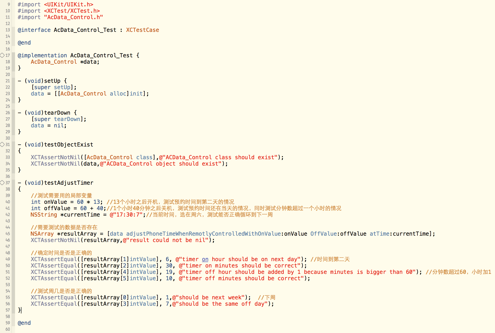
测试考虑了各种不同的情况，尽量保证测试的全面性。
Preferences:
[1] 王巍 TDD的iOS开发初步以及Kiwi使用入门
[2] 王巍 Kiwi 使用进阶 Mock, Stub, 参数捕获和异步测试
[3] 唐巧 用CocoaPods做iOS程序的依赖管理